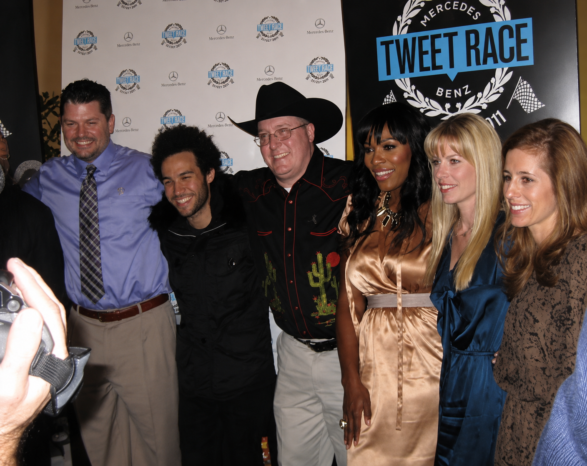

Campaign · Personal · February 2011
Tweet Race
Out of nearly 2,000 applicants, Todd Sanders and co-driver John Pedersen were selected to drive a tweet-fueled Mercedes-Benz 1,500 miles from Los Angeles to Dallas. They beat Serena Williams in the process and raised $50K for St. Jude.
The setup
Mercedes-Benz had never run a Super Bowl ad. They also had never been on Twitter and had a following of zero. To mark their first foray into social media they dreamed up the world's first Twitter-fueled race: four teams, from four cities, all headed to the Super Bowl, powered only by tweets.
Out of 1,949 applicants, four two-person driving teams were chosen based on social media prowess, personality, and "other intangibles." Todd Sanders and his co-driver John Pedersen, a friend he'd met on Twitter, were selected as Team S. Their vehicle: a 2011 Mercedes-Benz S400 Hybrid. Their starting point: Los Angeles. Their celebrity coach: Pete Wentz of Fall Out Boy.

How it worked
Every four tweets from supporters using the team's hashtag moved the car one mile. The team with the most points at the finish line (earned through tweet volume plus a series of social media challenges along the route) won a pair of brand-new 2012 Mercedes-Benz C-Class Coupes. Their charity would also receive a donation based on their finish.
The nine challenges pushed the teams to generate creative content in real time: marshalling fans at specific locations, filming a 60-second commercial for the S-Class they were driving, acting out pages from their owner's manual, and staging their vehicle in a fashion shoot, all documented and shared live on Twitter.


The win
Team S led the race from start to finish. Over three days and 1,500 miles, they generated 43,000 tweets and accumulated 131,643 total points — nearly double their nearest competitor. They crossed the finish line in Dallas in first place, beating out three other teams including the team coached by 13-time Grand Slam champion Serena Williams.

Final standings
Campaign impact
Post Race Report
A look back at the race to the Super Bowl.
The entry video
Before there was a race, there was an audition. This is the video that got me in.